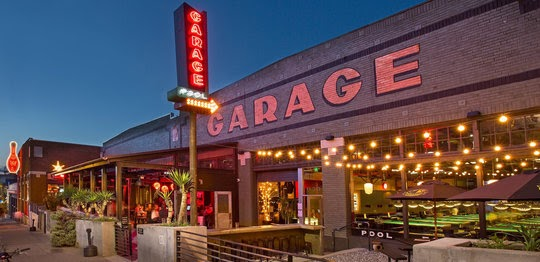
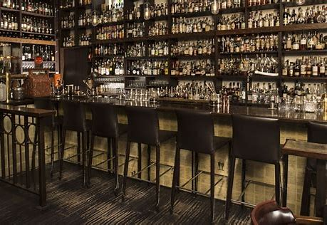
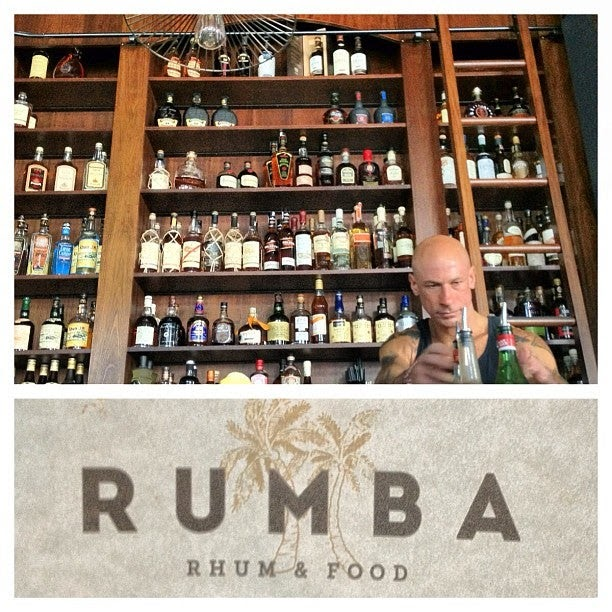

Bars in Capitol Hill
Popular Bars
Garage Billiards & Bowl
Garage Billiards & Bowl is easily one of the most frequented and busy bars in Capitol Hill. Affordable drinks include craft beers, cocktails, and pitchers, with Rainier beer as the local favorite, all amidst pool tables and bowling lanes.
Elysian
Elysian is a Seattle staple, and for a good reason, it makes solid beer. The Capitol Hill location is a 220 seat beer hall, full-service bar and restaurant. Space Dust is out of this world with a flavor and aroma of orange and citrus.
Rumba
Rumba is a unique rum bar with affordable drinks like the daiquiri, cocktails, and rum flights. The food menu is moderately priced and features classics such as burgers and sandwiches.